정보처리기사(구) (2001-09-23 기출문제)
1과목: 데이터 베이스
1. 개념 스키마(conceptual schema)에 대한 설명으로 옳지 않은 것은?
- 단순히 스키마(schema)라고도 한다.
- 범기관적 입장에서 데이터베이스를 정의한 것이다.
- 모든 응용시스템과 사용자가 필요로 하는 데이터를 통합한 조직 전체의 데이터베이스로 하나만 존재한다.
- 개개 사용자나 응용 프로그래머가 접근하는 데이터베이스를 정의한 것이다.
(정답률: 63%)

2. 분산 데이터베이스의 장점으로 거리가 먼 것은?
- 지역 자치성이 높다.
- 효용성과 융통성이 높다.
- 점증적 시스템 용량 확장이 용이하다.
- 소프트웨어 개발비용이 저렴하다.
(정답률: 88%)
3. 주기억장치 내에서 이루어지는 정렬이 아닌 것은?
- insertion sort
- selection sort
- cascade sort
- shell sort
(정답률: 51%)
4. 관계 데이터 모델에서 릴레이션(relation)에 포함되어 있는 튜플(tuple)의 수를 무엇이라고 하는가?
- 차수(degree)
- 카디널리티(cardinality)
- 속성수(attribute value)
- 카티션 프로덕트(cartesian product)
(정답률: 82%)
5. 기본 테이블 R을 이용하여 뷰 V1을 정의하고, 뷰 V1을 이용하여 다시 뷰 V2가 정의되었다. 그리고 기본 테이블 R과 뷰 V2를 조인하여 뷰 V3를 정의하였다. 이 때 다음과 같은 SQL 문이 실행되면 어떤 결과가 발생하는지 올바르게 설명한 것은?
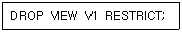
- V1만 삭제된다.
- R, V1, V2, V3 모두 삭제된다.
- V1, V2, V3만 삭제된다.
- 하나도 삭제되지 않는다.
(정답률: 50%)
6. 데이터 모델에 대한 설명으로 부적합한 것은?
- 현실 세계를 데이터베이스에 표현하는 중간 과정, 즉 데이터베이스 설계 과정에서 데이터의 구조를 표현하기 위해 사용되는 도구이다.
- 데이터 모델은 현실 세계를 데이터베이스로 표현하는 과정에서 개념적인 구조, 논리적인 구조, 물리적인 구조를 표현하기 위해 사용된다.
- 개념적 데이터모델은 속성들로 기술된 개체 타입과 이 개체 타입들간의 관계를 이용하여 현실 세계를 표현하는 방법이다.
- 논리적 데이터 모델은 필드로 기술된 데이터 타입과 이 데이터 타입들간의 관계를 이용하여 현실 세계를 표현하는 방법이다.
(정답률: 26%)
7. 스택의 응용 분야와 거리가 먼 것은?
- 운영체제의 작업 스케줄링
- 함수 호출의 순서 제어
- 인터럽트의 처리
- 수식의 계산
(정답률: 60%)
8. 데이터베이스의 뷰(view)에 관한 설명으로 옳지 않은 것은?
- 하나 이상의 테이블에서 유도되는 가상 테이블이다.
- 뷰 정의문 및 데이터가 물리적 구조로 생성된다.
- 뷰를 이용한 또 다른 뷰의 생성이 가능하다.
- 삽입, 갱신, 삭제 연산에는 제약이 따른다.
(정답률: 82%)
9. DBA의 수행 역할에 관한 설명으로 거리가 먼 것은?
- 데이터베이스 구축
- 응용 프로그램 개발
- 사용자 요구정보 결정 및 효율적 관리
- DBMS의 관리
(정답률: 84%)
10. 다음 Tree의 Degree와 터미널 노드의 수는?
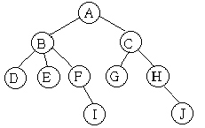
- Degree : 2 터미널 노드 : 4
- Degree : 3 터미널 노드 : 5
- Degree : 4 터미널 노드 : 2
- Degree : 4 터미널 노드 : 10
(정답률: 76%)
11. 트랜잭션에 대한 설명 중 보기에 해당하는 특성은?
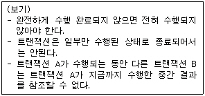
- 원자성(atomicity)
- 일관성(consistency)
- 분리성(isolation)
- 지속성(durability)
(정답률: 65%)
12. In the database design process, its result is a database schema in the implementation data model of DBMS. What is called this step?
- conceptual database design
- physical database design
- transaction implementation design
- logical database design
(정답률: 25%)
13. Which of the following is not a function of the DBA?
- schema definition
- storage structure definition
- application program coding
- integrity constraint specification
(정답률: 78%)
14. 시스템 카탈로그에 대한 설명으로 옳지 않은 것은?
- 사용자가 시스템 카탈로그를 직접 갱신할 수 있다.
- 일반 질의어를 이용해 그 내용을 검색할 수 있다.
- DBMS가 스스로 생성하고, 유지하는 데이터베이스 내의 특별한 테이블의 집합체이다.
- 데이터베이스 스키마에 대한 정보를 제공한다.
(정답률: 80%)
15. 연결 리스트(Linked List)에 대한 설명으로 거리가 먼 것은?
- 노드의 삽입이나 삭제가 쉽다.
- 노드들이 포인터로 연결되어 검색이 빠르다.
- 연결을 해주는 포인터(Pointer)를 위한 추가 공간이 필요하다.
- 연결 리스트 중에는 중간 노드 연결이 끊어지면 그 다음 노드를 찾기 힘들다.
(정답률: 43%)
16. 관계 데이터 언어(Data Language) 중에서 데이터의 보안, 무결성, 회복과 밀접한 관련이 있는 데이터 언어는?
- 데이터 정의어(Data Definition Language)
- 데이터 조작어(Data Manipulation Language)
- 데이터 제어어(Data Control Language)
- 도메인 관계해석 질의어(Query By Example)
(정답률: 71%)
17. 학생과 학교 개체 간의 학적 관계를 E-R 다이어그램으로 옳게 표현한 것은?
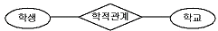
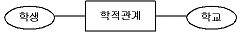
(정답률: 77%)
18. 데이터베이스 설계시 다음 ( ) 안의 내용으로 옳은 것은?
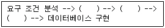
- 물리적 설계 --> 논리적 설계 --> 개념적 설계
- 개념적 설계 --> 논리적 설계 --> 물리적 설계
- 논리적 설계 --> 개념적 설계 --> 물리적 설계
- 논리적 설계 --> 물리적 설계 --> 개념적 설계
(정답률: 88%)
19. 데이터베이스 구성의 장점이 아닌 것은?
- 데이터 중복 최소화
- 여러 사용자에 의한 데이터 공유
- 데이터간의 종속성 유지
- 데이터 내용의 일관성 유지
(정답률: 76%)
20. 분산 데이터베이스에서 사용자는 데이터가 물리적으로 저장되어 있는 곳을 알 필요 없이 논리적인 입장에서 데이터가 모두 자신의 사이트에 있는 것처럼 처리하는 특성을 무엇이라 하는가?
- 지역 자치성(local autonomy)
- 위치 독립성(location independence)
- 단편 독립성(fragmentation independence)
- 중복 독립성(replication independence)
(정답률: 79%)
2과목: 전자 계산기 구조
21. 다음과 같은 마이크로 오퍼레이션이 일어나는 상태는?
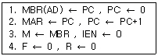
- Fetch
- Indirect
- Interrupt
- execute
(정답률: 60%)
22. 다음에서 인터럽트 작동 순서가 올바른 것은?
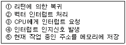
- ③⑤④②①
- ④③⑤②①
- ⑤②③①④
- ①③④⑤②
(정답률: 56%)
23. 메모리의 내용으로 어드레스 할 수 있는 메모리는?
- ROM
- RAM
- Virtual 메모리
- Associative 메모리
(정답률: 66%)
24. 아래 스위칭 회로의 논리식이 옳은 것은?
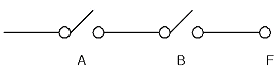
- F = A + B
- F = A·B
- F = A - B
- F = A/(B + A)
(정답률: 64%)
25. 명령어의 주소 부분과 PC의 값을 더해서 유효주소를 결정하는 주소 모드는?
- implied 모드
- relative address 모드
- index address 모드
- register indirect 모드
(정답률: 58%)
26. 복수 모듈 기억장치의 특징으로 옳지 않은 것은?
- 주기억장치와 CPU의 속도차의 문제점을 개선한다.
- 기억장치 버스를 시분할하여 사용한다.
- 각 모듈에 독자적으로 데이터를 저장하지 못한다.
- 기억장소의 접근을 보다 빠르게 한다.
(정답률: 64%)
27. 주소지정방식에 대한 설명이 옳지 않은 것은?
- 고유 주소지정방식은 항상 일정한 기능을 수행한다.
- 즉시 주소지정방식은 레지스터의 값을 초기화할 때 주로 사용된다.
- 인덱스 주소지정방식은 프로그램 카운터를 사용한다.
- 직접 주소지정방식은 명령어 주소 부분에 유효 주소 데이터가 있다.
(정답률: 32%)
28. 연산자(operation code)의 기능과 관련이 없는 것은?
- 함수연산기능
- 입·출력기능
- 제어기능
- 주소지정기능
(정답률: 58%)
29. 마이크로 오퍼레이션을 순서적으로 발생시키는데 필요한 것은?
- 스위치
- 레지스터
- 누산기
- 제어신호
(정답률: 70%)
30. 3-어드레스 머신(address machine)의 설명이 옳은 것은?
- 결과는 1st operand에 남는다.
- 결과는 2nd operand에 남는다.
- 결과는 3rd operand에 남는다.
- 결과는 임시 구역에 남는다.
(정답률: 64%)
31. 메모리로부터 방금 호출한 명령의 다음 명령이 들어있는 메모리의 번지를 지시하는 레지스터는?
- index register
- stack pointer
- program counter
- flag register
(정답률: 58%)
32. interrupt 중에서 최 우선권(top priority)이 주어져야 하는 것은?
- Arithmetic overflow interrupt
- interrupt from I/O
- Power fail interrupt
- Parity error interrupt
(정답률: 72%)
33. 입·출력 전송이 중앙처리장치의 레지스터를 경유하지 않고 수행되는 방법은?
- I/O Interface
- Strove control
- interleaving
- DMA
(정답률: 68%)
34. 논리 연산에 들어가지 않는 것은?
- NOT
- Complement
- OR
- Load
(정답률: 66%)
35. 주기억장치가 연속한 8바이트(Byte)의 필드(Field)를 더블워드(Double Word)라 할 때 하프워드(Half Word)는 몇 바이트인가?
- 2
- 4
- 8
- 16
(정답률: 49%)
36. 10진수 46을 2진화 10진수로 표현하면?
- 01000110
- 01010010
- 01010011
- 00100110
(정답률: 43%)
37. Interrupt 발생시 복귀 주소를 기억시키는데 사용되는 것은?
- Accumulator
- Stack
- Queue
- Program counter
(정답률: 49%)
38. 주기억장치로부터 캐시 메모리로 데이터를 전송하는 매핑 프로세스 방법이 아닌 것은?
- 어소시어티브 매핑
- 직접매핑
- 세트-어소시어티브 매핑
- Buffer
(정답률: 64%)
39. DMA 제어기가 한번에 한 데이터 워드를 전송하고 버스의 제어를 CPU에게 돌려주는 방법은?
- DMA 대량 전송
- 데이지체인
- 사이클 스틸링
- 핸드쉐이킹
(정답률: 48%)
40. 기억장치의 총 용량이 4096비트이고 워드 길이가 16비트일 때 프로그램 카운터(PC), 주소 레지스터(AR), 데이터 레지스터(DR)의 크기로서 바른 것은?
- 12, 12, 16
- 12, 12, 8
- 8, 8, 16
- 16, 8, 16
(정답률: 54%)
3과목: 운영체제
41. 새로 들어온 프로그램과 데이터를 주기억장치 내의 어디에 놓을 것인가를 결정하기 위한 주기억장치 배치 전략에 해당하지 않는 것은?
- best-fit
- worst-fit
- first-fit
- last-fit
(정답률: 75%)
42. 시분할 시스템에 대한 설명으로 거리가 먼 것은?
- 동일한 기억 장소를 둘 이상의 CPU들이 공유하는 시스템이다.
- 라운드 로빈(round robin) 방식이라고도 한다.
- 하나의 CPU를 여러 개의 작업들이 정해진 시간 동안 번갈아 사용한다.
- 다중 프로그래밍 방식과 결합하여 모든 작업이 동시에 진행되는 것처럼 대화식 처리가 가능하다.
(정답률: 49%)
43. 도스에서 내부명령과 외부명령의 차이 설명으로 가장 적합한 것은?
- 명령의 처리 루틴이 메모리에 상주하는 것을 내부명령이라하고, 디스크에 존재하지만 그 처리를 디스크 자체에서 하는 가에 따라 구분된다.
- 명령의 처리 루틴이 모두 디스크에 존재하지만 그 처리를 디스크 자체에서 하는 가에 따라 구분된다.
- 컴퓨터 내부조작을 하는 명령을 내부 명령이라하고, 컴퓨터 외부조작을 하는 명령을 외부 명령이라 한다.
- 컴퓨터가 쉽게 이해할 수 있는 언어를 사용한 명령이 내부 명령이고, 사용자 위주의 명령을 외부 명령이라 한다.
(정답률: 32%)
44. 순차파일(sequential file)을 사용했을 때 얻을 수 있는 장점으로 가장 적합한 것은?
- 원하는 레코드에 대한 순차 및 직접접근 형태를 모두 지원할 수 있다.
- 레코드들이 많이 삽입되면 주기적으로 블록 재구성이 필요하다.
- 저장 매체의 효율이 매우 높다.
- 한번 파일을 개방하면 읽기나 쓰기를 자유롭게 할 수 있다.
(정답률: 55%)
45. UNIX 운영체제의 특징이 아닌 것은?
- 높은 이식성
- 계층적 파일 시스템
- 단일 작업용 시스템
- 네트워킹 시스템
(정답률: 71%)
46. 선점(preemption) 스케줄링 방식에 대한 설명으로 옳지 않은 것은?
- 대화식 시분할 시스템에 적합하다.
- 긴급하고 높은 우선순위의 프로세스들이 빠르게 처리될 수 있다.
- 일단 cpu를 할당받으면 다른 프로세스가 cpu를 강제적으로 빼앗을 수 없는 방식이다.
- 선점을 위한 시간 배당에 대한 인터럽트용 타이머 클록(clock)이 필요하다.
(정답률: 59%)
47. 유닉스 시스템에서 커널의 수행기능에 해당하지 않는 것은?
- 프로세스 관리
- 기억장치 관리
- 입/출력 관리
- 명령어 해독
(정답률: 76%)
48. 자원 보호 기법에 해당하지 않는 것은?
- 자격제어 행렬(Capability control matrix)
- 접근 제어 리스트(Access control list)
- 접근 제어 행렬(Access control matrix)
- 자격 리스트(Capability list)
(정답률: 46%)
49. 세마포어에 대한 설명 중 옳지 않은 것은?
- 세마포어에 대한 연산은 처리 중에 인터럽트 되어야 한다.
- E.J.Dijkstra가 제안한 방법이다.
- 여러 개의 프로세스가 동시에 그 값을 수정하지 못한다.
- 상호배제의 원리를 보장하는데 사용된다.
(정답률: 49%)
50. 분산 시스템에서 약결합(loosely-coupled) 시스템의 특징이 아닌 것은?
- 프로세서간 통신은 공유 기억 장치를 통하여 이루어진다.
- 둘 이상의 독립된 컴퓨터 시스템을 통신 링크를 이용하여 연결한 시스템이다.
- 시스템마다 독자적인 운영체제를 보유한다.
- 프로세스간의 통신은 메시지 전달이나 원격 프로시저 호출을 통하여 이루어진다.
(정답률: 46%)
51. 프로세스들이 국부적인 부분만을 집중적으로 참조하는 구역성에는 시간 구역성과 공간구역성이 있는데, 다음중 공간 구역성의 경우는?
- 순환(looping)
- 배열 순례(array traversal)
- 스택(stack)
- 집계(totaling)에 사용되는 변수
(정답률: 56%)
52. 비선점식 스케쥴링 기법으로 짝지어진 것은?
- FIFO-SJF
- SRT-SJF
- RR(Round Robin)-SJF
- HRN-RR(Round Robin)
(정답률: 67%)
53. 다음은 무엇에 대한 설명인가?
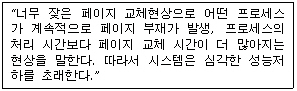
- Page-Fault
- Segmentation
- Thrashing
- Working-Set
(정답률: 75%)
54. 운영체제의 발달과정 순서를 옳게 나열한 것은?
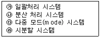
- ㉮㉱㉰㉯
- ㉰㉯㉱㉮
- ㉮㉰㉱㉯
- ㉰㉱㉯㉮
(정답률: 59%)
55. 디스크 스케줄링 기법 중에서 탐색 거리가 가장 짧은 요청이 먼저 서비스를 받는 기법이며, 탐색 패턴이 편중되어 안쪽이나 바깥쪽 트랙이 가운데 트랙보다 서비스를 덜 받는 경향이 있는 기법은?
- FCFS
- C-SCAN
- LOOK
- SSTF
(정답률: 68%)
56. UNIX 파일 시스템의 inode에서 관리하는 정보가 아닌 것은?
- 파일의 링크수
- 파일이 만들어진 시간
- 파일의 크기
- 파일이 최초로 수정된 시간
(정답률: 71%)
57. PCB(Process Control Block)가 포함하는 정보가 아닌 것은?
- 자식 프로세스에 대한 포인터
- 할당되지 않은 주변장치의 상태 정보
- 프로세스의 현재상태
- 프로세스의 우선 순위
(정답률: 72%)
58. 분산 시스템의 구축 목적에 해당하지 않는 것은?
- 보안성 향상
- 자원 공유의 용이성
- 연산 속도 향상
- 신뢰성 향상
(정답률: 78%)
59. 운영체제를 기능에 따라 분류할 때, 제어 프로그램에 해당하지 않는 것은?
- data management program
- service program
- job control program
- supervisor program
(정답률: 61%)
60. 파일 접근 방식 중 순차 접근의 장점으로 볼 수 없는 것은?
- 다음 레코들 접근이 빠르다.
- 공간 낭비가 없다.
- 임의의 레코드를 검색하는데 효율적이다.
- 파일 구성이 쉽다.
(정답률: 75%)
4과목: 소프트웨어 공학
61. 외계인코드(Alien Code)를 방지하기 위한 방법으로 가장 적합한 것은?
- 프로그램 내에 문서화(Documentation)를 철저하게 해두어야 한다.
- 자료흐름도(DFD)를 상세히 그려야 한다.
- 프로그램 완성시 testing을 확실하게 해야 한다.
- 프로그램시 반드시 visual tool을 사용해야 한다.
(정답률: 58%)
62. 소프트웨어의 위기를 해결하기 위해 개발의 생산성이 아닌 유지보수의 생산성으로 해결하려는 방법을 의미하는 것은?
- 소프트웨어 재사용
- 소프트웨어 재공학
- 클라이언트/서버 소프트웨어 공학
- 전통적 소프트웨어공학
(정답률: 66%)
63. COCOMO의 프로젝트 모드가 아닌 것은?
- organic mode
- semi-detached mode
- medium mode
- embedde mode
(정답률: 53%)
64. 시스템 구성요소에 해당되지 않는 것은?
- 입력
- 출력
- 제어
- 상태
(정답률: 73%)
65. S/W Project 일정이 지연된다고 해서 Project 말기에 새로운 인원을 추가 투입하면 Project는 더욱 지연되게 된다고 주장하는 법칙은?
- Putnam의 법칙
- Mayer의 법칙
- Brooks의 법칙
- Boehm의 법칙
(정답률: 75%)
66. 소프트웨어 품질관리 위원회의 기본적인 목적으로 가장 바람직한 것은?
- 소프트웨어 품질 향상
- 표준화 준수 여부 검증
- 도큐먼트(document)의 품질 검사
- 사용자와의 관계 향상
(정답률: 22%)
67. 프로젝트 관리의 대상으로 거리가 먼 것은?
- 비용관리
- 일정관리
- 고객관리
- 품질관리
(정답률: 70%)
68. 자료흐름도(DFD:Data Flow Diagram)의 구성요소 중 자료출처와 도착지를 나타내는 기호는?
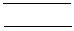
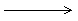
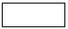
(정답률: 57%)
69. 소프트웨어 수명주기(Life-Cycle) 모형중 프로토타이핑(Prot-otyping) 모형의 가장 큰 장점이라고 볼 수 있는 것은?
- 개발비용의 절감
- 4세대 언어의 적용
- 개발단계의 명확성
- 사용자 요구사항의 정확한 파악
(정답률: 69%)
70. 현재 소프트웨어 개발 중 가장 많은 비용이 요구되는 단계는?
- 분석
- 설계
- 구현
- 유지보수
(정답률: 77%)
71. 객체지향 프로그래밍(Object-oriented programming :OOP) 개발 기법에 대한 설명으로 옳지 않은 것은?
- 절차 중심 프로그래밍 기법이다.
- 객체지향 프로그래밍 언어에는 Smalltalk, C++ 등이 있다.
- 객체모델의 주요요소는 추상화, 캡슐화, 모듈화, 계층 등이다.
- 설계시 자료와 자료에 가해지는 프로세스를 묶어 정의하고 관계를 규명한다.
(정답률: 60%)
72. 소프트웨어 형상관리(configuration management)에 관한 설명으로 가장 거리가 먼 것은?
- 소프트웨어에서 일어나는 수정이나 변경을 알아내고 제어하는 것을 의미한다.
- 유지보수 단계에서 행해진다.
- 형상관리를 위하여 구성된 팀을 책임 프로그래머 팀(chief programmer team)이라고 한다.
- 형상관리에서 중요한 기술 중의 하나는 버전 제어 기술이다.
(정답률: 50%)
73. SOFTWARE Project의 비용 결정 요소와 관련이 적은 것은?
- 개발자의 능력
- 요구되는 신뢰도
- 하드웨어의 성능
- 개발 제품의 복잡도
(정답률: 54%)
74. 객체지향 시스템에서 자료부분과 연산(또는 함수) 부분 등 정보처리에 필요한 기능을 한 테두리로 묶는 것을 무엇이라고 하는가?
- 정보은닉
- 클래스
- 캡슐화
- 통합
(정답률: 62%)
75. 객체지향 분석에 대한 설명으로 옳지 않은 것은?
- 분석가에게 주요한 모델링 구성요소인 클래스, 객체, 속성, 연산들을 표현해서 문제를 모형화시킬 수 있게 해준다.
- 객체지향 관점은 모형화 표기법의 전후관계에서 객체의 분류, 속성들의 상속, 그리고 메시지의 통신 등을 결합한 것이다.
- 객체는 클래스로부터 인스턴스화 되고, 이 클래스를 식별하는 것이 객체지향분석의 주요한 목적이다.
- E-R 다이어그램은 객체지향분석의 표기법으로는 적합하지 않다.
(정답률: 71%)
76. 소프트웨어 개발 방법론에서 구현(Implementation)에 대한 설명으로 가장 적절한 것은?
- 요구사항 분석 과정 중 모아진 요구사항을 옮기는 것
- 시스템이 무슨 기능을 수행하는지에 대한 시스템의 목표기술
- 프로그래밍 또는 코딩이라고 불리며 설계 명세서가 컴퓨터가 알 수 있는 모습으로 변환되는 과정
- 시스템이나 소프트웨어 요구 사항을 정의하는 과정
(정답률: 73%)
77. 모듈안의 작동을 자세히 관찰할 수 있으며, 프로그램 원시 코드의 논리적인 구조를 커버(cover)하도록 테스트 케이스를 설계하는 프로그램 테스트 방법은?
- 블랙 박스 테스트
- 화이트박스 테스트
- 알파 테스트
- 베타 테스트
(정답률: 50%)
78. 전통적인 소프트웨어 개발 방법론인 폭포수형(waterfall) 모델에서 개발 순서가 옳은 것은?
- 타당성 검토-계획-분석-구현-설계
- 타당성 검토-분석-계획-설계-구현
- 타당성 검토-계획-분석-설계-구현
- 타당성 검토-분석-계획-구현-설계
(정답률: 57%)
79. 모듈의 결합도를 높은 순서대로 옳게 표시한 것은?
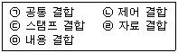
- (ㄱ)>(ㄴ)>(ㄷ)>(ㄹ)>(ㅁ)
- (ㅁ)>(ㄱ)>(ㄴ)>(ㄷ)>(ㄹ)
- (ㄴ)>(ㄷ)>(ㄹ)>(ㅁ)>(ㄱ)
- (ㄷ)>(ㄹ)>(ㅁ)>(ㄱ)>(ㄴ)
(정답률: 60%)
80. 소프트웨어 추정 모형(estimation models)이 아닌 것은?
- COCOMO
- Putnam
- Function-Point
- PERT
(정답률: 33%)
5과목: 데이터 통신
81. 두 개의 서로 다른 형태의 네트워크를 상호 접속하는 3계층 장비를 무엇이라고 하는가?
- 허브
- 리피터
- 브리지
- 라우터
(정답률: 49%)
82. 데이터를 전송하는데 있어서 정보 전달 방향이 교대로 바뀌어 전송되는 통신 방법은?
- 반이중 통신
- 전이중 통신
- 단방향 통신
- 시분할 통신
(정답률: 66%)
83. OSI 참조 모델의 계층에서 통신 시스템간의 경로를 선택하는 기능, 통신 트래픽의 흐름을 제어하는 기능 및 통신중에 패킷의 분실로 재전송을 요청할 수 있는 오류제어 기능을 수행하는 것은?
- 물리계층
- 데이터링크계층
- 네트워크계층
- 전송계층
(정답률: 30%)
84. 에러 검출 기법 중 에러가 발생한 블록 이후의 모든 블록을 다시 재전송하는 방식은?
- Stop-and-wait ARQ
- Go-back-N ARQ
- Selective ARQ
- Adaptive ARQ
(정답률: 73%)
85. 다음 중 매체로서 무선을 사용하는 LAN은?
- IEEE 802.3
- IEEE 802.5
- IEEE 802.11
- IEEE 802.12
(정답률: 62%)
86. 데이터 전송회선과 컴퓨터와의 전기적 결합과 전송문자를 조립, 분해하는 장치는?
- 신호 변환 장치
- 통신 제어 장치
- 다중화 장치
- 망 제어 장치
(정답률: 31%)
87. 가상회선 방식의 특징 중 옳지 않은 것은?
- 송수신국 사이에 논리적 연결이 설정된다.
- 정보 전송 전에 제어 패킷에 의해 경로가 설정된다.
- 패킷의 발생 순서대로 전송된다.
- 패킷의 송신순서와 수신순서가 서로 다를 수 있다.
(정답률: 41%)
88. LAN(Local Area Network)의 특징 설명 중 옳지 않은 것은?
- 단일 건물내에 설치되고, 패킷 지연이 최소화된다.
- 확장성과 재배치가 용이하고, 경로 설정이 필요하다.
- 네트워크 내의 모든 정보기기와 통신이 가능하다.
- 광대역 전송 매체의 사용으로 고속 통신이 가능하다.
(정답률: 38%)
89. 다음에서 전송 제어에 속하지 않는 것은?
- 입출력 제어
- 동기 제어
- 오류 제어
- 보완 제어
(정답률: 65%)
90. 좁은 의미의 VAN이 제공하는 기능에 속하지 않는 것은?
- 인터페이스 기능
- 전송기능
- 교환 기능
- 통신처리기능
(정답률: 43%)
91. 주파수 분할 방식을 이용하여 사람의 음성을 다중화 하려고 한다. 음성 대역폭은 3kHz이고, 채널 간섭을 방지하기 위한 Guard band 1kHz라고 가정할 경우에, 48kHz의 대역폭의 채널상에 최대로 다중화 할 수 있는 사람의 음성수는?
- 10개
- 12개
- 14개
- 16개
(정답률: 51%)
92. 수신 스테이션은 비트 에러나 프레임의 손실을 검사하게 되고, 에러가 검출되면 자동적으로 송신 스테이션에게 재전송을 요청하는 자동 재전송 요청(Automatic Repeat reQuest)을 하게 되는데, 다음 중 ARQ 방식이 아닌 것은?
- 정지-대기(Stop-and-Wait) ARQ
- Go-back-N ARQ
- 선택적 재전송(Selective-Repeat) ARQ
- 슬라이딩 윈도우(Sliding-Window) ARQ
(정답률: 64%)
93. 회선 교환 방식에 대한 설명으로 옳지 않은 것은?
- 데이터 전송 전에 먼저 통신망을 통한 연결이 필요하다.
- 일정한 데이터 전송률을 제공하므로 두 가입자가 동일한 전송 속도록 운영된다.
- 전송된 데이터에 있어서의 에러제어나 흐름제어는 사용자에 의해 수행되어야 한다.
- 송수신자 간의 실시간 데이터 전송에 적합하지 않다.
(정답률: 45%)
94. 주파수 분할 다중화(FDM) 방식에 대한 설명 중 옳지 않은 것은?
- 전송되는 각 신호의 반송 주파수는 동시에 전송된다.
- 전송하려는 신호의 필요 대역폭보다 전송매체의 유효대역폭이 적을 때 사용된다.
- 반송 주파수는 각 신호의 대역폭이 겹치지 않도록 충분히 분리되어야 한다.
- 전송매체를 지나는 신호는 아날로그 신호이다.
(정답률: 48%)
95. 순차적 디코딩(Sequential Decoding)과 한계값 디코딩(Thre-shold Value Decoding)을 사용하여 에러를 수정하는 방식은?
- 군계수 검사 방식
- 순환 중복 검사 방식
- 해밍 부호
- 상승부호
(정답률: 24%)
96. 다음 중 IP의 라우팅 프로토콜이 아닌 것은?
- IGP
- RIP
- EGP
- HDLC
(정답률: 66%)
97. 회선 경쟁 선택(Contention) 방식에 대한 설명으로 옳지 않은 것은?
- 회선에 접근하기 위해 서로 경쟁하는 방식이다.
- 송신측이 전송할 메시지가 있을 경우 사용 가능한 회선이 있을 때까지 기다려야 한다.
- ALOHA 방식이 대표적인 예이다.
- 트래픽이 많은 멀티포인트 회선 네트워크에서 효율적인 방식이다.
(정답률: 53%)
98. OSI 참조모델에서 Data Link는 몇 계층에 해당하는가?
- 계층2
- 계층3
- 계층5
- 계층7
(정답률: 60%)
99. 비동기 전송 방식과 관련이 없는 것은?
- 스타트비트와 스톱 비트를 사용한다.
- 저속이 s통신 시스템에 주로 사용한다.
- 비트 열이 전송되지 않을 때는 휴지 상태가 된다.
- 송신신호 클록에 의하여 타임 슬롯의 간격으로 비트를 식별한다.
(정답률: 39%)
100. 다음의 네트워크 표준들 중에 정보 전송에 있어 토큰링 방식을 사용하는 것은?
- X.25
- Frame relay
- IEEE 802.5
- Ethernet
(정답률: 52%)